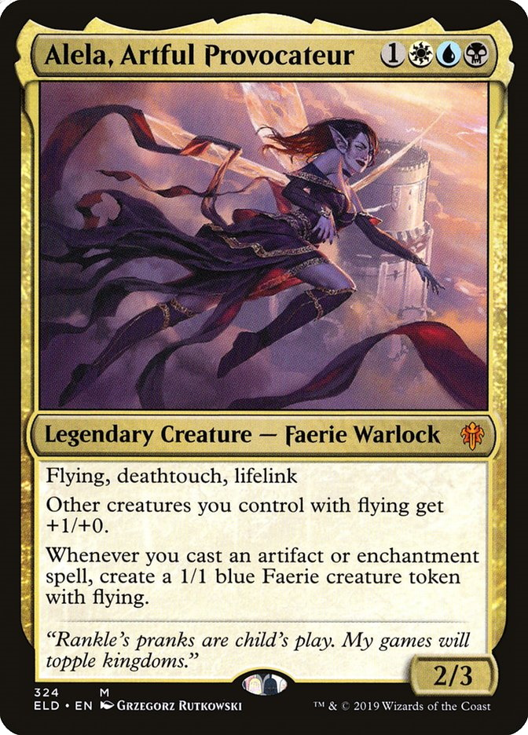
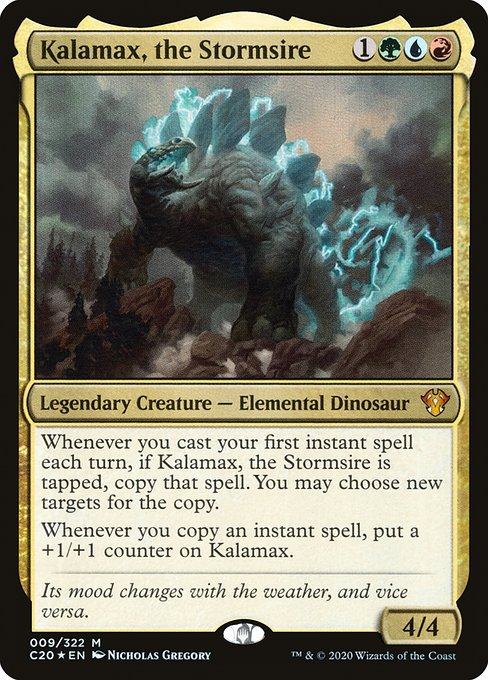

Commander is the most popular competitive format, so much so that it is used in competitive tournaments (called EDH or Elder Dragon Highlander).
Commander is played with 1 legendary creature in the command zone (or 2 with the partner ability) and 99 cards in your deck. these cards must all be individually unique, meaning you can't have 2 of the same card in a commander deck.
All cards in the deck must be one of the colors in your commanders colors. for example, if you use Alela, Artful Provocateur, then every card in your deck would have to be either white, blue or black.
 Can you guess what colors you could put in a deck if Kalamax was your commander?
In commander, you start with 40 life instead of 20 and up to 10 sideboard cards are allowed.
Also, if you're having trouble choosing a commander, you can try edhrec.com. They have a great selection. I also have a list of my personal favorites here.
Image credit from Scryfall.com's card-searching API.